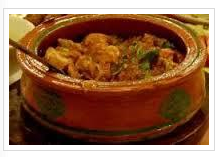

Green Mutton (Haryali Mutton)
Recipie by Chef Marukh

Ingredients
- Mutton/lamb meat 1 kg (small pieces)
- Salt 1 tsp
- Red chili powder 1 tsp
- Onion 1 cup (fried)
- Green chilies 6 (sliced)
- Mint leaves ½ cup
- Fresh coriander leaves ½ cup (chopped)
- Green onion ½ cup (sliced)
- Yogurt 1 cup
- Ginger garlic paste 2 tbsp
- Turmeric ½ tsp
- Coriander powder ½ tsp
- Oil ½ cup
- Whole green chilies 4
Instruction
- Wash the meat
- Add meat, salt and red chili powder in cooking pan and cook it on slow heat. (No need to add water.)
- Blend together fried onion, green chilies sliced, green coriander, mint, green onion and yogurt.
- When meat own water dries, add blend mixture in meat. Also add ginger garlic paste, turmeric, coriander
powder and oil.
- Now cook it on slow heat until meat tender and oil separates.
- Add whole green chilies and simmer for 5 minutes on slow heat. Serve warm.